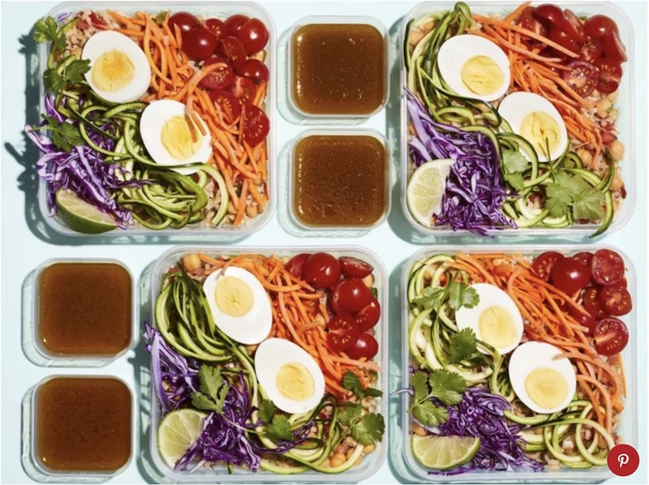
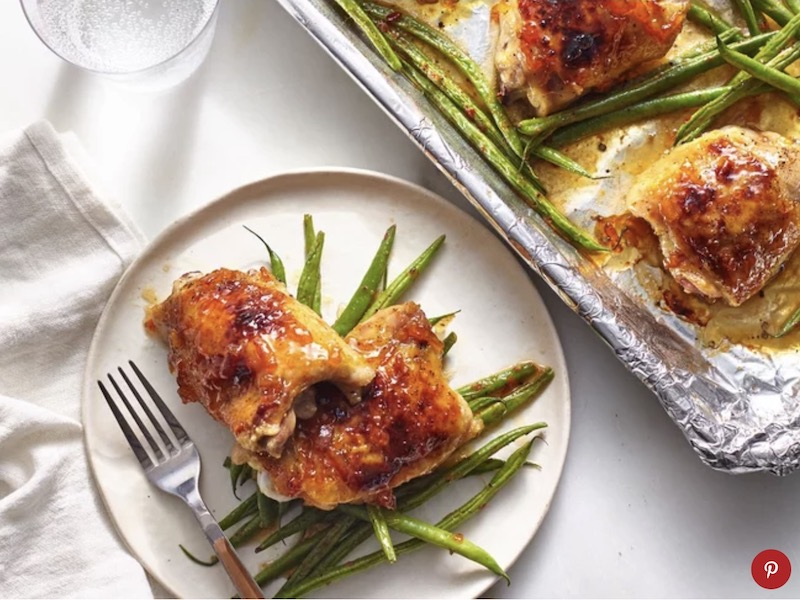
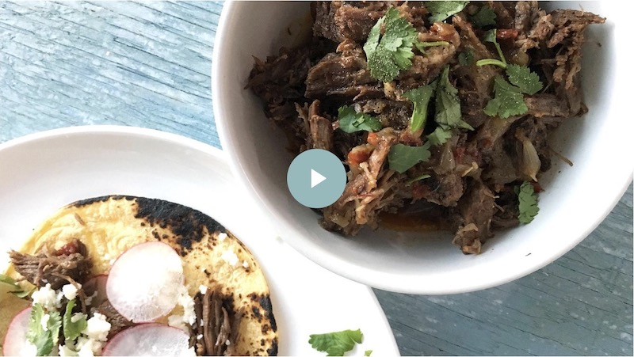
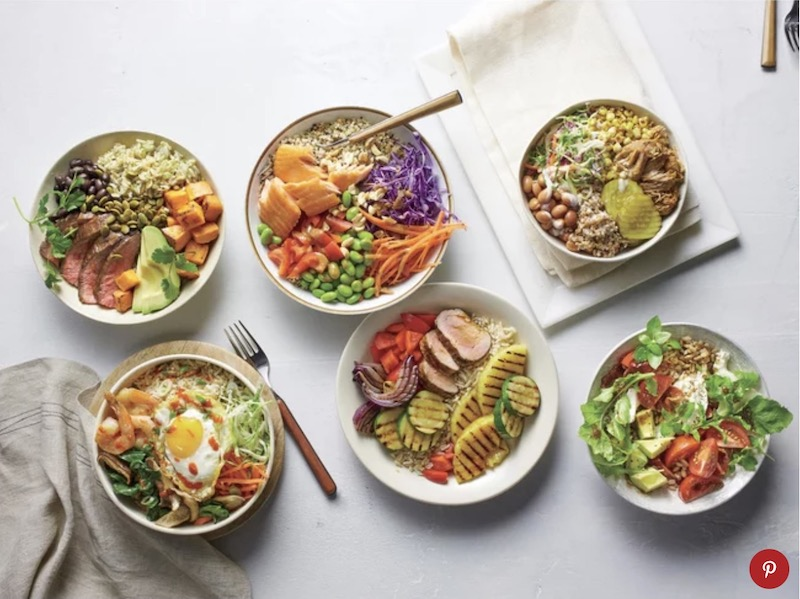
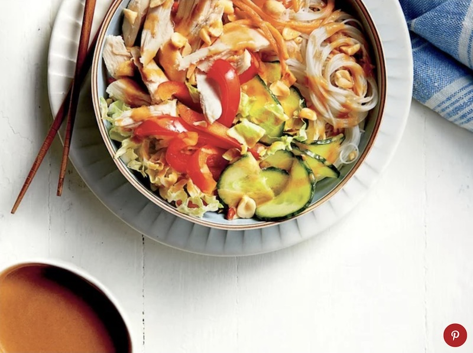

These are meals you'll actually want to keep eating by Thursday.
Each product we feature has been independently selected and reviewed by our editorial team. If you make a purchase using the links included, we may earn commission.
There are two types of people in this world—those who meal prep, and those who don’t. For the better part of my adult existence, I’ve counted myself among the latter. Whether prepping ahead for the week’s dinners, to provide for packed lunches, or a combination of the two, a marathon cooking session on Sunday, to me, not only seemed massively daunting, but like a massive waste of time as well.
I know. WHAT? Meal prep… a waste of time??
Indeed, a waste of my precious weekend hours, because as much as I hate to admit this about myself (as there’s no doubt—it sounds bratty, because it is), I’m a person who will sooner skip lunch or eat cereal for dinner over eating something I don’t have a stomach for. Yes—even if I dedicated hours to prepping it days before as a means of preventing myself from skipping meals or calling a hearty pour of Cap’n Crunch my supper.
However, that’s all changed; I am a woman reformed. I have come to realize in recent weeks that it’s not the act of meal prepping itself that doesn’t jive with me, it’s simply that I wasn’t prepping the right things. If you know that you’re the type of person who is never going to reach a Thursday and be stoked to eat the same spinach salad (which was packed on Sunday) that you’ve eaten virtually every day of the week thus far, don’t force it. Though it’s a commonly suggested meal prep tactic, I have learned that hard way that roasting a sheet pan full of veggies at the beginning of the week to eat off of/incorporate into other meals just isn’t something that works for me; I don’t like leftover/reheated roasted vegetables and never will.
The key to successful meal prepping is to identify foods and/or complete meals that are: 1.) legitimately easy to prep 2.) actually able to hold well for a few days 3.) delicious enough that you’ll be totally fine to repeat eat.
*Note: #3 in the list above means that there are no absolutes here, you have to figure out what works for your appetite… and as a former non meal-prep fan, I am here to tell you—I believe you can do this. Here are a few dishes that might be worth trying out in your routine; these are recipes that have proven to be highly successful meal prep players for me and other members of the MyRecipes staff.
Greek Chicken Grain Bowls
This is one of those meals I’m apt to make for a fast and flavor-packed dinner on a Sunday with my office lunches for the week in mind. Because it’s just about as easy to cook the chicken/grains and cut veggies for multiple servings as it is for one, no sense in not taking a few extra minutes to completely assemble a few packed lunches while I’m already in the kitchen. And given the diversity of strong flavors and textures going on in these quinoa bowls (p.s. feel free to sub a different grain like barley or farro if you want), I’m not apt to be turned off by my lunch halfway through the week.
Fiesta Bowls with Chipotle Lime Vinaigrette
Loaded up with plenty of fresh veggies and vegetarian-friendly protein sources, this is a make-ahead meal you can most assuredly feel good about. When prepping this recipe ahead, wait until you’re ready to eat before you drizzle the zippy chipotle-lime dressing over your meal. Otherwise, you’re apt to have some serious sogginess going on by the time mid-week rolls around. You can find all sorts of vessels perfect for packing just enough salad dressing—includingthe ones that you’d typically receive with a to-go order from a restaurant—but I especially like these reusable Rubbermaid containers with tight-fitting lids.
Sheet Pan Orange Chicken with Garlicky Green Beans
This genius sheet pan meal keeps your prep largely hands-off and clean-up to a minimum, but packs a flavorful punch worth looking forward to—even a few days into the week. Throw these glazed thighs and delightfully crisp-tender green beans into your to-go containers with some white rice, and you’re set to be the envy of anyone who encounters you at the office microwave.
Instant Pot Barbacoa
Though not a complete meal on its own, this recipe is perfect for the meal-prepper who has a high tendency to become bored eating the exact same meal multiple times. This succulent barbacoa is so easy to make in the Instant Pot, and it’s a budget-friendly make-ahead move that will provide you with ample meat to use in a variety of applications over the days ahead. (If you’re generally cooking for only on or two, you may even have enough to pack up and freeze for down the road.) Use the incredibly tender and tasty shredded beef for tacos or nachos, pile it onto a salad or into a sandwich, or use it as your protein for a burrito bowl.
Southern BBQ Bowls
While this would be a great meal idea to utilize leftovers from a weekend barbecue, you can also make it largely using prepared components from the grocery store. Feel free to swap the roasted pork for shredded rotisserie chicken and the bulgur for your grain of choice.
Chicken Noodle Bowl with Peanut-Ginger Sauce
A zesty sauce provides a strong flavor backbone for these vibrant noodle bowls, which means there’s not a ton of work left for you to do. The prep time required is a mere 20 minutes and the only actual “cooking” you have to do takes place in the microwave. What’s not to love about that?